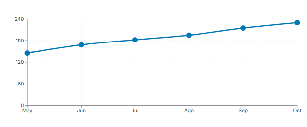

Total Donantes
1250
+12% este mes
Total Beneficiarios
850
+8% este mes
Donaciones Activas
324
En proceso
Centros Registrados
15
+3 este mes
Mapa de Donaciones - Lima y San Juan de Lurigancho
Origen de donantes y destino a centros de beneficio
Origen Principal
Lima Centro
Lima Centro
Destino Principal
San Juan de Lurigancho
San Juan de Lurigancho
Crecimiento de Donantes
Crecimiento de Beneficiarios
Donaciones Completadas
Total este mes: 230 donaciones
Productos Más Solicitados
Total productos disponibles: 1,680 kg
Actividad Reciente
- Nueva donación registrada Hace 5 minutos
- Nuevo usuario registrado Hace 15 minutos
- Solicitud de ayuda aprobada Hace 1 hora
- Donación entregada Hace 2 horas
- Nuevo centro registrado Hace 3 horas
Resumen del Mes
- Donaciones completadas 892
- Nuevos donantes 124
- Nuevos beneficiarios 68
- Centros activados 3
- Tasa de satisfacción 98%
- Productos entregados 1,250 kg